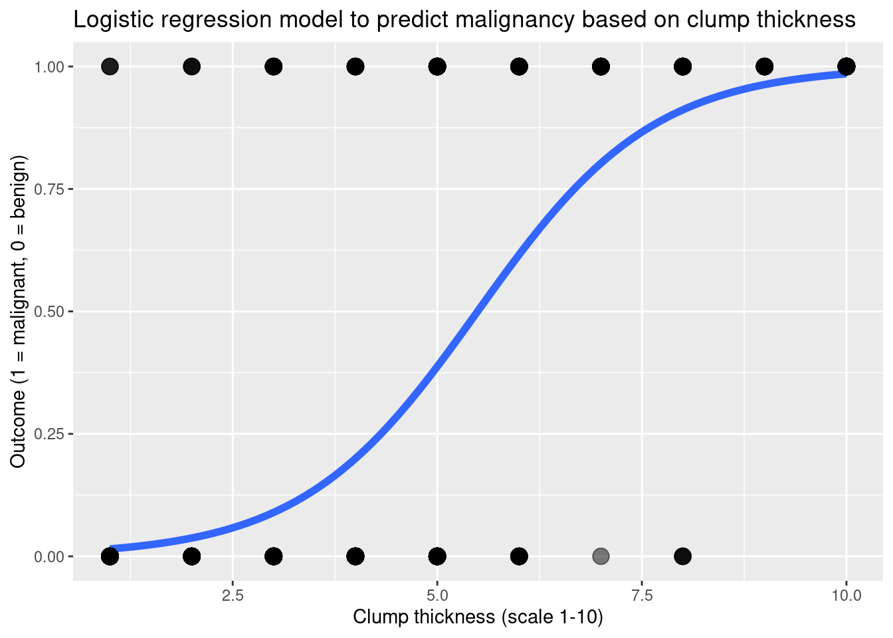
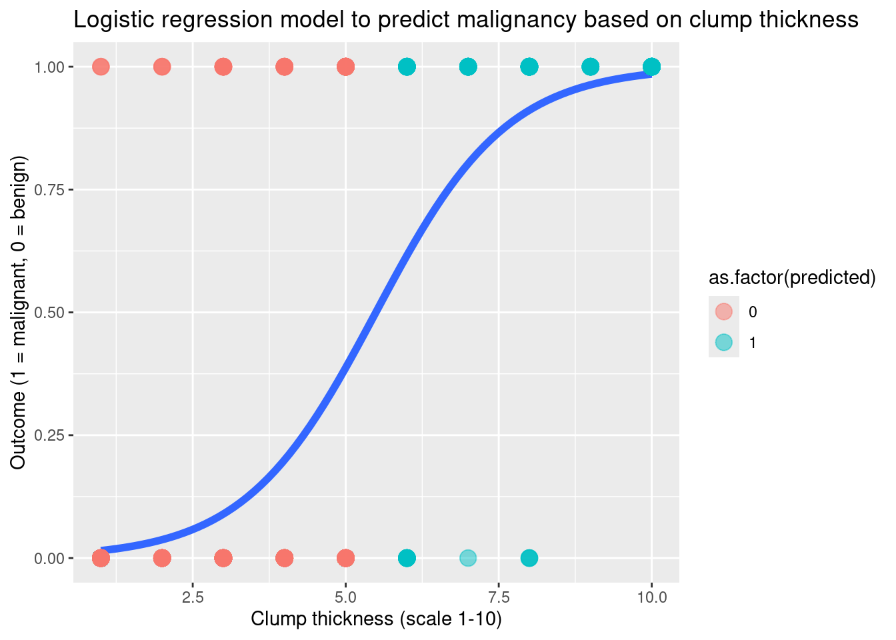
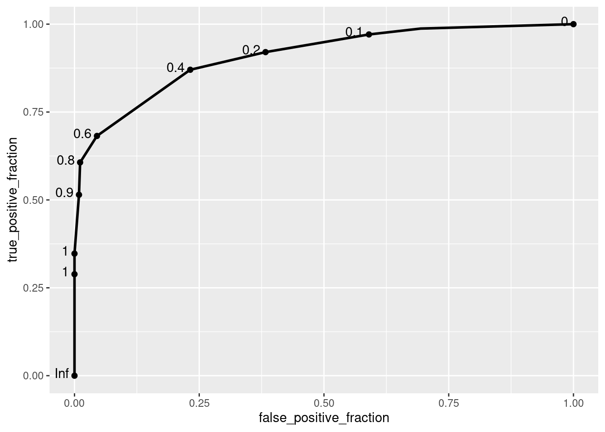
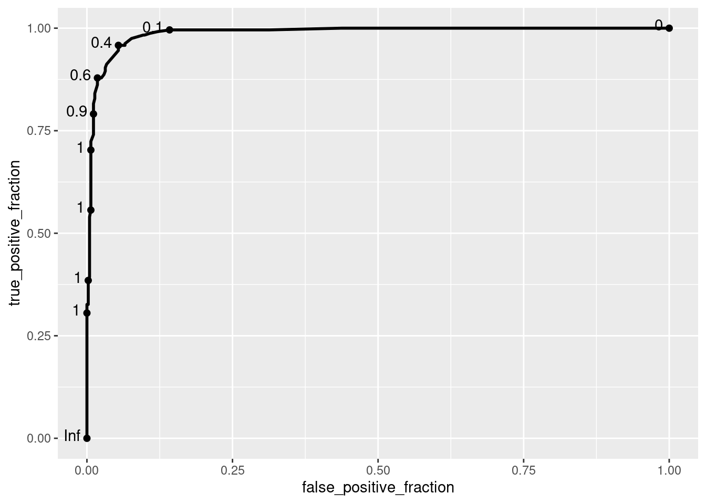
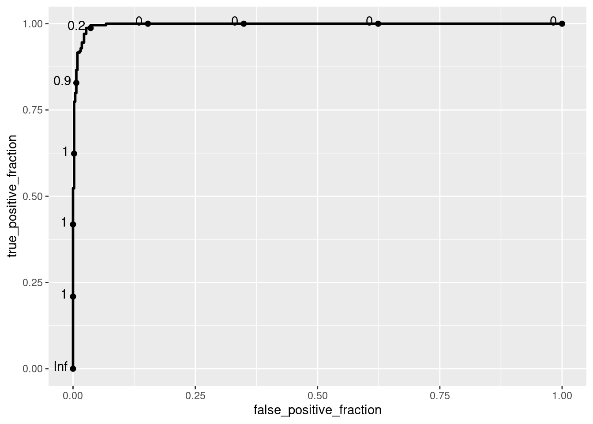

Logistic Regression
Learning objectives
- Use logistic regression to model a binary outcome variable based on one or more predictors.
- Make predictions using the logistic model and apply a classification threshold to obtain binary classifications.
- Evaluate model performance using an ROC curve and calculate the Area Under the Curve (AUC).
We will use the packages tidyverse and plotROC:
We will continue working with the biopsy dataset that contains information about tumor biopsy results.
# Upload the data from GitHub
biopsy <- read_csv("https://raw.githubusercontent.com/laylaguyot/datasets/main//Biopsy.csv")
# Take a quick look at 10 random rows
head(biopsy, 10)This dataset contains information about 9 different features of tumors that we will use to predict the outcome variable (a malignant vs. benign tumor). When using classification models in R, the functions usually expect the outcome to be coded as 0 or 1 (0 represents a “negative” case and 1 a “positive” case).
Try it! Overwrite the outcome variable in biopsy so that it has value 0 or 1. What proportion of tumors are malignant?
# Overwrite biopsy
biopsy <- biopsy |>
mutate(outcome = ifelse(outcome == "malignant", 1, 0))
mean(biopsy$outcome)## [1] 0.3499268Almost 35% of the tumors were malignant in the dataset.
1. Predicting a binary response with a numeric predictor
First, let’s predict the outcome based on clump_thickness.
a. Visualizing the model
In the previous worksheet, we already looked at the relationship between these two variables but let’s take a slightly different look:
# Represent the relationship with a model
biopsy |>
ggplot(aes(x = clump_thickness, y = outcome)) +
# Consider a logistic regression model
geom_smooth(method = "glm", se = FALSE,
method.args = list(family = "binomial"),
size = 2) +
# Show original data
geom_point(size = 4, alpha = 0.5) +
labs(x = "Clump thickness (scale 1-10)",
y = "Outcome (1 = malignant, 0 = benign)",
title = "Logistic regression model to predict malignancy based on clump thickness")
How did R choose a logistic curve to fit this data?
b. Fitting a model
We can find the expression of the logistic regression model with the glm(outcome ~ predictor, data = ..., family = "binomial") function (glm stands for generalized linear models):
# Fit the model
fit_log <- glm(outcome ~ clump_thickness, data = biopsy, family = "binomial")
# Take a look at the model summary
summary(fit_log)##
## Call:
## glm(formula = outcome ~ clump_thickness, family = "binomial",
## data = biopsy)
##
## Coefficients:
## Estimate Std. Error z value Pr(>|z|)
## (Intercept) -5.11012 0.37894 -13.48 <2e-16 ***
## clump_thickness 0.93042 0.07418 12.54 <2e-16 ***
## ---
## Signif. codes: 0 '***' 0.001 '**' 0.01 '*' 0.05 '.' 0.1 ' ' 1
##
## (Dispersion parameter for binomial family taken to be 1)
##
## Null deviance: 884.35 on 682 degrees of freedom
## Residual deviance: 458.48 on 681 degrees of freedom
## AIC: 462.48
##
## Number of Fisher Scoring iterations: 6The output gives the logit-form of the model which is:
\(\ln{\frac{\hat{p}}{1-\hat{p}}} = -5.11012 + 0.93042 * clump\_thickness\)
where \(\hat{p}\) is the probability of the tumor being malignant (the value of 1).
Then we can predict the probability of the tumor being malignant by using the probability form:
\(\hat{p} = \frac{e^{-5.11012 + 0.93042 * clump\_thickness}}{1 + e^{-5.11012 + 0.93042 * clump\_thickness}}\)
c. Making predictions
Let’s use the expression of the model to calculate predicted values.
Try it! Use the expression of the probability form (note that exp() refers to the exponential function) to create a new variable called probability that predicts the probability of the tumor being malignant based on values of clump_thickness. Based on these probabilities, how do we decide if the tumor should be considered as malignant or benign?
biopsy |>
# Use the expression of the model
mutate(probability = exp(-5.11012 + 0.93042 * clump_thickness)/(1 + exp((-5.11012 + 0.93042 * clump_thickness)))) |>
select(clump_thickness, outcome, probability)We would need to define some cutoff value: for example, if the probability is greater than 0.5 then the tumor should be predicted as malignant, and benign otherwise.
Much more convenient to calculate probability values (especially when we will have more predictors with a longer expression for the model) is the predict(model_name, type = "response") function:
biopsy |>
# Calculate probability values
mutate(probability = predict(fit_log, type = "response")) |>
select(clump_thickness, outcome, probability)We can use the probability values to predict the outcome as malignant or benign (1 or 0, respectively). We would have to decide on a cutoff value for the probability of the tumor being malignant. For example, let’s try the cutoff value 0.5:
biopsy_pred <- biopsy |>
# Create new variables for probability and predicted values
mutate(probability = predict(fit_log, type = "response"),
predicted = ifelse(probability > 0.5, 1, 0)) |>
select(clump_thickness, outcome, probability, predicted)
# Take a look
head(biopsy_pred, 10)We can also make predictions for new data. For example, let’s consider a tumor with a clump thickness of 5:
# Make predictions for new data
tumor <- data.frame(clump_thickness = 5)
predict(fit_log, newdata = tumor, type = "response")## 1
## 0.3874509The model predicts a probability of approximately 39% for the tumor to be malignant if it has a clump thickness of 5.
d. Error in predicted values
Sometimes our predicted values are correct, sometimes they’re not! Recall the concepts of True Positive/True Negative (correct predicted values) and False Positive/False Negative (incorrect predicted values).
Try it! Using biopsy_pred, visualize the logistic regression model as above and color the original data points by the predicted value for the outcome. Which points on the graph show True Positive cases? False Positive cases?
# Represent the relationship with a model
biopsy_pred |>
ggplot(aes(x = clump_thickness, y = outcome)) +
# Consider a logistic regression model
geom_smooth(method = "glm", se = FALSE,
method.args = list(family = "binomial"),
size = 2) +
# Show original data, colored by predicted values
geom_point(size = 4, alpha = 0.5,
aes(color = as.factor(predicted))) + # add as.factor() to only see 2 categories
labs(x = "Clump thickness (scale 1-10)",
y = "Outcome (1 = malignant, 0 = benign)",
title = "Logistic regression model to predict malignancy based on clump thickness")
The True Positive cases are the malignant cases that were truly detected as malignant: blue dots on the top. The FALSE Positive cases are the benign cases that were falsely detected as malignant: blue dots on the bottom.
e. Performance
To assess the performance for a logistic regression models, we can consider the ROC curve and the corresponding area under the curve (AUC):
# ROC curve
ROC <- biopsy_pred |>
ggplot() +
# the predictions are based on the probability values
geom_roc(aes(d = outcome, m = probability), n.cuts = 10)
ROC
The cutoff values shown on the ROC curve represent possible thresholds for classifying a tumor as malignant or benign based on the predicted probability (it does not have to be 0.5 as we tried earlier).
## [1] 0.908878Our classifier seems to perform well with a AUC of approximately 91%.
2. Using multiple predictors
What if we add more predictors to our model? That way we can try to predict the outcome with more information:
# Fit the model using two predictors
fit_log <- glm(outcome ~ clump_thickness + uniform_cell_size,
data = biopsy,
family = "binomial")
# Take a look at the model summary
summary(fit_log)##
## Call:
## glm(formula = outcome ~ clump_thickness + uniform_cell_size,
## family = "binomial", data = biopsy)
##
## Coefficients:
## Estimate Std. Error z value Pr(>|z|)
## (Intercept) -7.38224 0.64375 -11.468 < 2e-16 ***
## clump_thickness 0.61964 0.09649 6.422 1.35e-10 ***
## uniform_cell_size 1.29019 0.13740 9.390 < 2e-16 ***
## ---
## Signif. codes: 0 '***' 0.001 '**' 0.01 '*' 0.05 '.' 0.1 ' ' 1
##
## (Dispersion parameter for binomial family taken to be 1)
##
## Null deviance: 884.35 on 682 degrees of freedom
## Residual deviance: 196.58 on 680 degrees of freedom
## AIC: 202.58
##
## Number of Fisher Scoring iterations: 7The model becomes more complex. How has the performance of our model improved?
# ROC curve
ROC <- biopsy |>
# Recalculate predictions
mutate(probability = predict(fit_log, type = "response")) |>
ggplot() +
geom_roc(aes(d = outcome, m = probability), n.cuts = 10)
ROC
The curve looks like the performance has improved (curving close to the top left corner, meaning that the True Positive rate is high for a low False Positive rate).
## [1] 0.9879095The value of the AUC is closer to 1 so our model with two predictors can better predict true malignant cases without many false malignant cases!
Notes:
Adding too many variables can create issues such as overfitting: the model can become too specific to the tumors in the dataset on which we “train” the model and it will be very difficult to generalize to other tumors (which is the goal of creating a model).
We can quickly check which features might be more useful for predicting the outcome by looking at the last column in the model output. Any
.or*indicates which features are more useful in predicting the outcome.
Try it! Fit a model with all predictors that make sense. Which predictors seem to be most useful to predict the malignancy of a tumor? What is the corresponding value of AUC?
# Fit the model using two predictors
fit_log <- glm(outcome ~ .,
data = biopsy,
family = "binomial")
# Take a look at the model summary
summary(fit_log)##
## Call:
## glm(formula = outcome ~ ., family = "binomial", data = biopsy)
##
## Coefficients:
## Estimate Std. Error z value Pr(>|z|)
## (Intercept) -10.10394 1.17488 -8.600 < 2e-16 ***
## clump_thickness 0.53501 0.14202 3.767 0.000165 ***
## uniform_cell_size -0.00628 0.20908 -0.030 0.976039
## uniform_cell_shape 0.32271 0.23060 1.399 0.161688
## marg_adhesion 0.33064 0.12345 2.678 0.007400 **
## epithelial_cell_size 0.09663 0.15659 0.617 0.537159
## bare_nuclei 0.38303 0.09384 4.082 4.47e-05 ***
## bland_chromatin 0.44719 0.17138 2.609 0.009073 **
## normal_nucleoli 0.21303 0.11287 1.887 0.059115 .
## mitoses 0.53484 0.32877 1.627 0.103788
## ---
## Signif. codes: 0 '***' 0.001 '**' 0.01 '*' 0.05 '.' 0.1 ' ' 1
##
## (Dispersion parameter for binomial family taken to be 1)
##
## Null deviance: 884.35 on 682 degrees of freedom
## Residual deviance: 102.89 on 673 degrees of freedom
## AIC: 122.89
##
## Number of Fisher Scoring iterations: 8# ROC curve
ROC <- biopsy |>
# Recalculate predictions
mutate(probability = predict(fit_log, type = "response")) |>
ggplot() +
geom_roc(aes(d = outcome, m = probability), n.cuts = 10)
ROC
## [1] 0.9963248While taking into account all predictors, the most useful predictors seem to be clump thickness and bare nuclei. The AUC value has increased again, indicating that this model is even better at detecting true malignant cases in this dataset.
Recommended Resources
- Worksheet keys are posted at the end of the week on Canvas under Programming Tools.
- Recommended readings: Logistic regression
- R documentation for glm